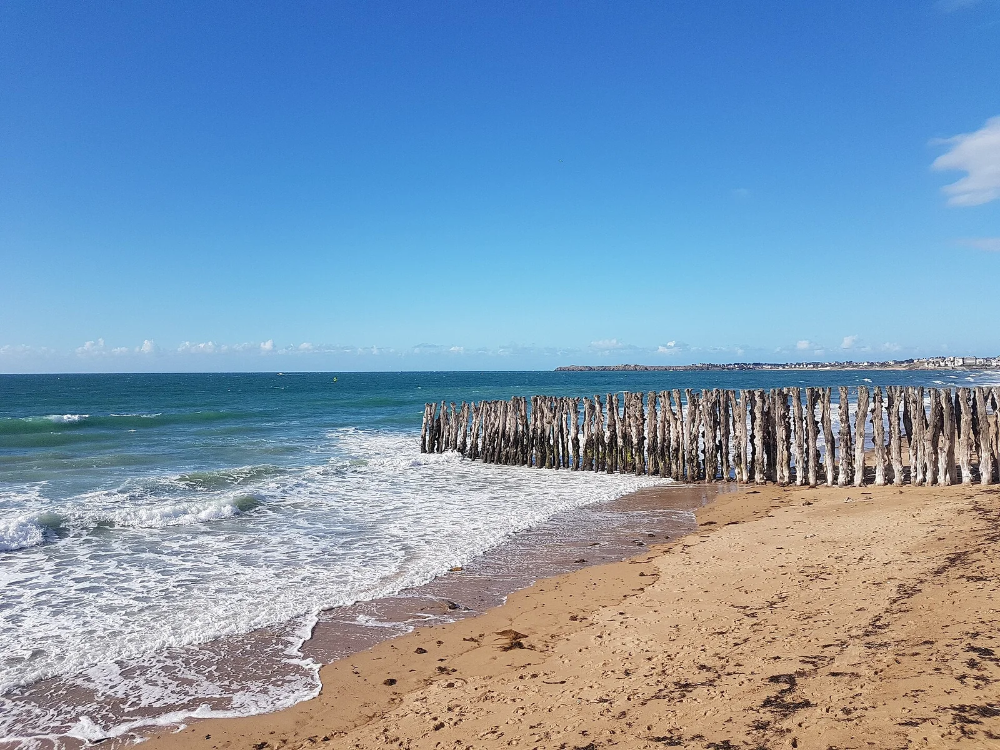

Saint-Malo — Le Sillon
Ille-et-Vilaine, France · baignade, kayak, paddle, kitesurf, surf

La grande plage du Sillon face à la cité corsaire : baignade, paddle, kite et petites vagues, sous l’une des plus fortes marées du monde.
- Lieu
- Ille-et-Vilaine, France
- Niveau
- Débutant
- Activités
- baignade, kayak, paddle, kitesurf, surf
- Type d'eau
- Mer / océan
- Coordonnées
- 48.65, -2.02 (position approximative du secteur)
Dangers à connaître
- Marnage énorme, courants en bord de digue.
- Brise-lames et rochers (Grand Bé).
Le conseil d'Ocean Buddy
Va au Grand Bé à pied seulement à marée basse, surveille l’heure.
Ouvrir dans Ocean Buddy Télécharger sur l'App Store
Source : Description historique Ocean Buddy · vérification externe en attente.